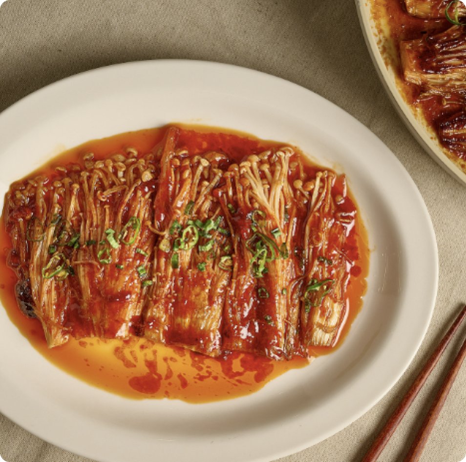

1.
팽이버섯은 아래쪽 뿌리 부분(균사체)을 잘라내 주고, 모양을 살려고 2~3줄 씩 듬성 듬성 찢어주세요. 쪽파와 청양고추는 송송 썰어 주세요

2.
볼에 고추장, 연두순, 참기름, 설탕을 넣고 잘섞어서 양념장을 만들어주세요.
3.
중불의 팬에 기름을 두르고, 팽이버섯을 올려서 숨이 죽어 부드러워질때까지 앞뒤로 구워주세요.(약 2~3분)
4.
팽이버섯 위에 양념장을 고루 발라주고, 약불로 줄여 썬 고추와 쪾파를 얹어 3~5분 동안 더 졸여주세요. 버섯에서 물이 나오면서 양념이 잘 스며들면 완성!